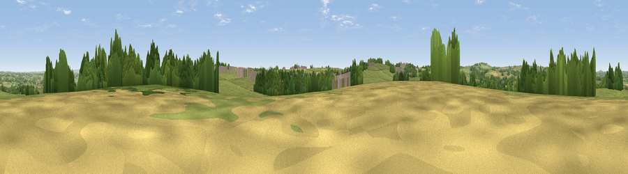

Viewpoint near Mabe Burnthouse
#30748 in England · top 60% of its area beats it · near Mabe BurnthouseWhere it is
The exact computed spot (SW 75125 35675). Click the marker for map links.
The view, rendered

A 360° render of this exact spot computed from the terrain model, tree cover and land cover — summer colours, afternoon light, calibrated against photographs of famous viewpoints. Real trees, hedges and buildings will differ in detail.
The panorama
Grey silhouette: terrain skyline in each direction (720 bearings, Earth curvature and refraction included). Dashed green: skyline with trees (+15 m) and buildings (+8 m) as obstacles. Blue strip: how far the ground is visible on each bearing.
Where the view opens
Wedge length = distance to the farthest visible ground on that bearing (vegetation-aware). Rings at 10, 25 and 50 km.
What fills the view
68% grassland · 16% woodland · 10% cropland · 6% built-up ·
Angular shares of the visible panorama (visual magnitude), not map area. Landscape diversity 0.43 (0–1 Shannon).
Key numbers
More beautiful places nearby
The staircase of upgrades: each row has a higher view potential than everything closer. Driving times are estimates from straight-line distance, calibrated against real road routing — check an actual route before setting out.
| Place | Direction | Drive | Score |
|---|---|---|---|
| Viewpoint near Tremough | ESE · 1 km | ~2 min | 62.3 |
| Viewpoint near Mabe Burnthouse | SSE · 2 km | ~5 min | 71.9 |
| Viewpoint near Lanner | NW · 6 km | ~13 min | 74.5 |
| Carn Brea | NW · 8 km | ~17 min | 81.1 |
| St Agnes Beacon | NNW · 15 km | ~27 min | 86.1 |
| Rosewall Hill | W · 27 km | ~43 min | 88.0 |
| Viewpoint near Combe Martin | NE · 140 km | ~164 min | 88.9 |
| Holdstone Hill | NE · 142 km | ~165 min | 90.2 |
50.17833, -5.15098 · source: screening · position refined by local search. Computed location — check access rights before visiting.